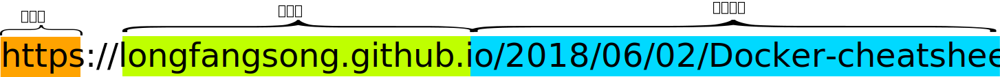
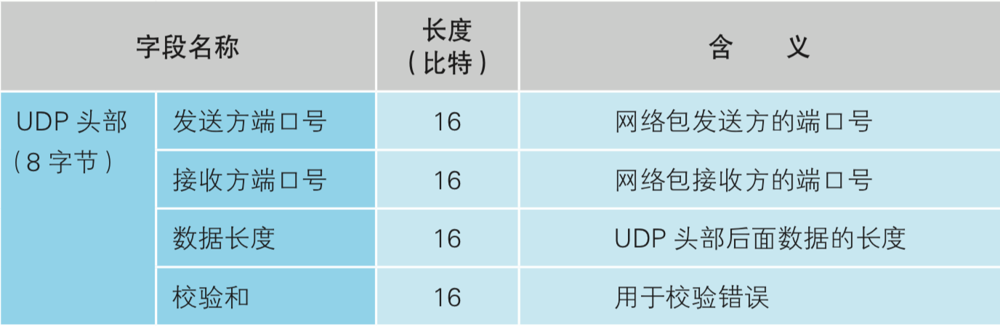
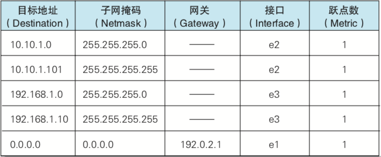
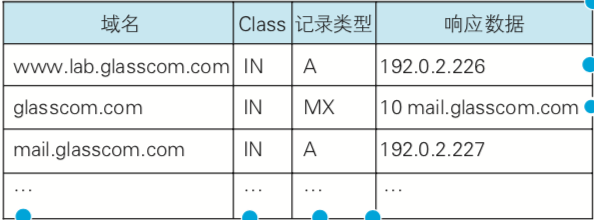
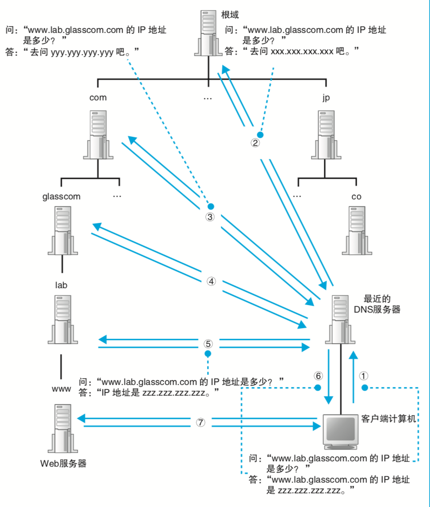
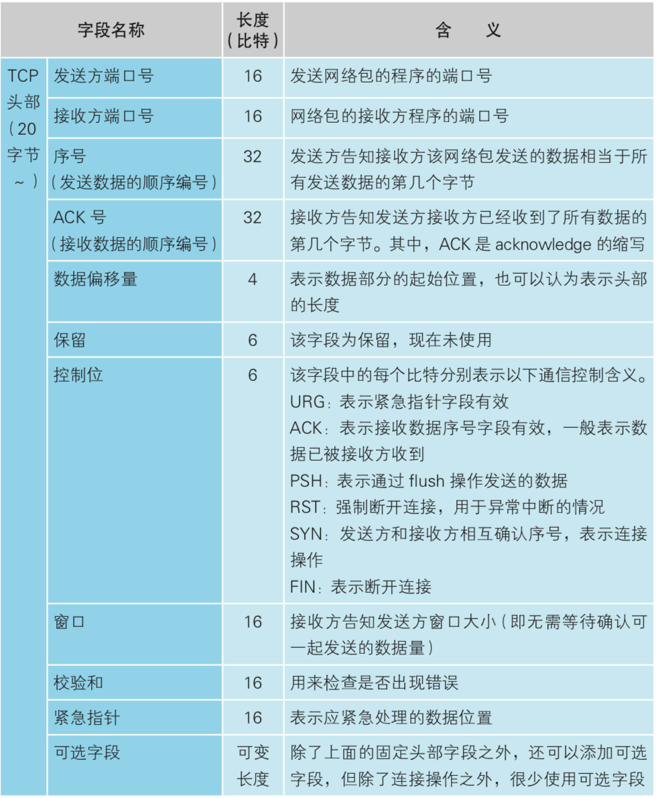

近来发现一本无痛的计网入门书籍《网络是怎样连接的》【 (日1)户根勤著 】，虽然说讲的比较偏科普，深度一般，但非常适合用来了解“big picture”，然后再读一些硬核的书（eg.《Unix网络编程》）来填补知识体系上的空缺。
个人认为这本书更加适合作为教材，传统教材一上来没有直观认识，就讲什么五层模型七层模型，三次握手四次分手，把学生搞的头大，有什么意思呢。
感谢这本书，我现在对一个网页从用户输入URL来请求网页到网页呈现在我们的浏览器中的过程有了更完整的了解。
以下是这一过程：
用户输入地址
浏览器解析地址
- 协议名就是访问的方式，有
http(s)、ftp、file（其实这个严格来说不能算协议）等 - 主机名就是要访问的资源所在的服务器的名称
文件目录就是你要访问的资源所在的位置，如果只输入路径，不输入完整的文件名，则会访问这一路径下的默认文件，如果最后的
/省略掉了的话，可能会被误解为“文件名”，此时如果对应文件存在，则优先返回这个文件，否则自动添加/。下文以
http协议为例讲解。
- 协议名就是访问的方式，有
生成HTTP请求
请求的格式如下：
1
2
3
4
5
6<方法> <URI> HTTP/1.1
key:value
key:value
...
<消息体>如：
GET请求
1
2
3
4
5
6
7
8GET / HTTP/1.1
Host: shupt.top
Upgrade-Insecure-Requests: 1
User-Agent: Mozilla/5.0 (Macintosh; Intel Mac OS X 10_13_5) AppleWebKit/537.36 (KHTML, like Gecko) Chrome/67.0.3396.99 Safari/537.36
Accept: text/html,application/xhtml+xml,application/xml;q=0.9,image/webp,image/apng,*/*;q=0.8
Accept-Encoding: gzip, deflate
Accept-Language: zh-CN,zh;q=0.9
Connection: keep-alivePOST请求
1
2
3
4
5
6
7
8
9
10
11
12
13
14
15
16POST /login HTTP/1.1
Host: shupt.top
Content-Length: 111
Cache-Control: max-age=0
Origin: http://shupt.top
Upgrade-Insecure-Requests: 1
Content-Type: application/x-www-form-urlencoded
User-Agent: （略）
Accept: （略）
Referer: http://shupt.top/login
Accept-Encoding: gzip, deflate
Accept-Language: zh-CN,zh;q=0.9
Cookie: （略）
Connection: keep-alive
_token=（略）&email=longfangsong%40icloud.com&password=test&remember=on其中请求头有哪些，各自的意义是什么，请自行查表。
向DNS服务器查询域名对应的IP
构造查询消息，消息包含：
- 域名
- Class，值恒为IN，这是一个历史遗留问题
- 记录类型，如
- A代表域名
- MX代表邮件交换
交由UDP协议发送
在消息前添加UDP请求头2

添加后：
交由IP协议发送
网卡的MAC模块添加报头和起始帧分界符、帧校验序列（FCS）
报头
是一串长达56bit的1010……（交替的10）序列，用途是确定时钟的频率。
起始帧分界符
1010 1011，标记报头结束，包内容开始
帧校验序列
长达32字节，为f(包内容)【f的具体表达式待查】，用于检验数据传输的正确性。
添加后：
由网卡的PHY模块将信号转为可以在网线上发送的格式，并发送到交换机
【此阶段过于复杂，不讲】
交换机将包转发到路由器
路由器根据收到的包的接收方IP地址对包进行转发
路由器中有这样一张路由表6（下面的数据均取自书中）

路由器会将包中的目标地址与经过mask的表中的目标地址进行匹配。然后将包发送到匹配上的地址中网络号最长的一个对应的端口上，如果存在多个网络号长度相等的匹配，则选择Metric值（表征路由远近，越小越近）最小的一个来发送。
如果没有一个地址匹配，则会选择最后一行（0.0.0.0）来发送。
具体转发方法如下：
网线上的信号到达交换机的PHY模块3，PHY模块将信号转为MAC模块可以读懂的格式（这点和交换机相同）
交换机的MAC模块将信号转为数字信息，并通过FCS来检测错误（有错误的包会被丢掉）（这点和交换机相同）
根据上述查表规则查到要发送到的端口
更新IP头部中的TTL
TTL为包的有效期（即还能经过路由器的个数），初始会被设置为一个不大不小的数（常为64或128），每经过一个路由器，该值减1，减为0时，包会被丢弃，这个设定是为防止传输过程中出现环。
如果包对于输出端口来说过长，则使用IP协议规定的分片机制对包进行分片，分片后的每个包都带有与原来相似的IP头部（IP头部中记录分片相关信息的部分会被修改）
更新MAC头部
根据路由表的网关列判断要发送到的IP地址，进而确定其对应MAC地址。如果网关是一个 IP 地址，则这个IP地址就是我们要转发到的目标地址。如果网关为空，则接收方IP地址就是要转发到的IP。通过上面说过的ARP来查询到MAC地址。
根据通信线路的类型发送信号7
多个路由器层层转发后，包就到达了目的地（本次的目的地是DNS服务器）
DNS查询域名对应的IP
DNS服务器内部有一张资源记录表（下面的数据均取自书中）：

如果能在DNS中找到对应的记录，则直接返回对应的响应数据，否则会从根域开始逐级向下查询：
DNS通过与查询来时相似的途径把对应的IP返回给请求方
通过操作系统的TCP协议栈向服务器发送连接请求
构造Socket，储存相关连接信息
TCP协议栈构造一个SYN分节，即下面的TCP头部：

中SYN为1，消息体为空的TCP消息。
使用上面所说过的IP协议发送给服务器8
服务器（通过IP协议）返回
SYN=1,ACK=1的TCP包，代表服务器部分连接创建成功客户端收到上述包后，返回
ACK=1的TCP包，代表客户端部分连接创建成功
在连接过程中，我们共发送了三封TCP包：
- 客户端到服务器：
SYN=1 - 服务器到客户端：
SYN=1,ACK=1 - 客户端到服务器：
ACK=1
故曰三次握手9。
三次握手之后，连接就创建成功了。
通过TCP协议栈发送HTTP消息
协议栈根据 MTU 和与上次发送之间的时间间隔判断是否发送。
MTU 是一个网络包的最大长度（包含IP与TCP头部）的总长度。
MSS = MTU - IP与TCP头部长度
在缓冲区中数据的量达到MSS，或者与上次发送之间的时间间隔达到一定长度时，协议栈会实际发送网络包。
另外，应用程序也可以命令协议栈不经等待立刻发送，浏览器很多时候会这样做。
当HTTP消息长度超出MSS时，TCP会将其拆分到多个网络包中，再分别发送出去，此时TCP头部中的“序号”字段表示这个包中的内容是
原始数据[序号-offset,序号-offset+包内容长度)，其中offset是一个随机数值，是在握手时计算并放置于握手时的TCP包中来告知对放的，注意发送和接受时的offset是不同的，它们一个由客户端计算，在第一次握手时发给服务器，一个由服务器计算，在第二次握手时发给客户端。通过IP协议发送TCP包（参考前面的UDP，只是将“UDP头”变为“TCP头”）
服务器接受包后返回确认信息
确认信息的TCP头部中有一个
ACK号，ACK = 服务器收到的包的序号 + 服务器收到的包的内容的长度
根据确认信息判断是否需要重传
如果客户端没有收到某个包对应的ACK信息，则会重新发送这个包
注意发送和接受ACK信息是通过所谓的“滑动窗口”方式并行进行的
断开连接
由提出断开连接的一方开始向对方发送TCP头部中
FIN=1的包。对方返回
ACK信息。对方向我方发送
FIN=1。我方返回
ACK信息。这里共发送了四封TCP包，假设在A和B两台机器之间建立了连接，由A提出断开连接：
- A到B：
FIN=1 - B到A：
ACK - B到A：
FIN=1 - A到B：
ACK
故曰四次分手9。
- A到B：
删除Socket
注意Socket并非在四次分手完成后立刻删除，这是为了防止如下情形：
前三次握手正常
最后一次
ACK并未正常送达。此时从A的角度看，四次分手其实已经完成，A已经删除了Socket，并且这个Socket的端口号被另一个Socket再利用了。
B没有收到
ACK，于是重发一份FIN=1，被A的同一端口的Socket接受到了。这个Socket就会进入意外的断开连接过程。
因此四次分手完成后要稍等一会才能删除Socket。
相关知识
IP地址
其实就是网络中设备的ID。
Netmask（子网掩码）
用来指明一个IP地址的哪些位标识的是主机所在的子网，以及哪些位标识的是主机的位掩码。子网掩码不能单独存在，它必须结合IP地址一起使用。子网掩码只有一个作用，就是将某个IP地址划分成网络地址和主机地址两部分。
例如：
192.168.0.0/24
即
1100 0000.1010 1000.0000 0000. 0000 0000/1111 1111.1111 1111.1111 1111.0000 0000
或
c0.90.0.0/ff.ff.ff.00
意为这一个子网里的主机的IP地址是192.168.0.0~192.168.255.255，即1100 0000.1010 1000.0000 0000. 0000 0000~1100 0000.1010 1000.0000 0000. 1111 1111（实际上192.168.0.0和192.168.255.255一般都会用来做其他用途，比如广播），也就是说，前24位表示这个网络，后面32-24=8位是每个主机的地址。
运用子网掩码，可以方便的判断两个IP是否属于同一个子网，只需两个IP分别与字网掩码进行按位与操作，观察得到的结果是否相等即可。
Socket
网络上的两个程序通过一个双向的通信连接实现数据的交换，这个连接的一端称为一个socket。
其实说到底不过是向另一台主机的某个程序（对应一个端口）发东西的一个句柄。
1. 我们不得不承认，日本在计算机基础理论的普及上远远走在了中国的前面，除此书外，《计算机是怎样跑起来的》、《30天自制操作系统》、《CPU自制入门》、《自制编程语言》等一系列书籍无疑降低了学习相关知识的门槛。 ↩
2. 头部字段表格引自原书 ↩
3. 这里有一个MDI和MDI-X的坑，但这并不是重点，另外还有个叫自动协商的东西可以了解下 ↩
4. 这张表由交换机自动维护，维护方法见书（中文版153页），如果没有查到MAC地址对应的端口，就会像老式的集线器那样进行全网广播 ↩
5. 出于个人喜好，作为一个mask，是一定要写做16进制的。另外Netmask翻译成子网掩码的出来挨打（这翻译实在一般），除此之外，“套接字”这个名字更是不明所以。 ↩
6. 路由表由路由协议（如BGP）自行维护 ↩
7. 这部分原书里有写，但较为繁杂，故本文暂且略过 ↩
8. 在此之前服务器需要实现进行“被动打开”来监听连接端口，等待连接请求 ↩
9. 三次握手四次分手发送的TCP包如果没有及时ACK，也是会被重传的 ↩